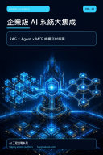

Google Play Books
企業級 AI 系統大集成（Vol.10）
RAG × Agent × MCP 終極交付指南

付費購買提供試閱版AI 學習 / AI Coding
企業級 AI 系統大集成（Vol.10）
RAG × Agent × MCP 終極交付指南
當 AI 從聊天框走向企業流程，系統必須具備工具呼叫、狀態管理、記憶、協作、安全審批與可控交付能力。模型只是大腦，真正的企業 AI 還需要完整的系統架構。 《Vol.10 企業級 AI 系統大集成》從多模態與 Function Calling 開始，逐步拆解 ReAct 思考框架、AgentExecutor、自主智能體、多代理人協作、CrewAI、記憶體層級與 LangGraph 狀態機。後續以企業級 Orchestrator 架構串接共享記憶、工具與專業 Agent，並討論 Alignment、HITL 人工審批與高風險操作的安全卡控。 本書適合希望把 RAG、Agent 與工具協定整合進真實產品的開發者與架構師。透過架構圖、流程解析與實務案例，你將建立從單一模型到可治理 AI 團隊的整體視野，理解如何讓 Agent 不只會回答，更能可靠地完成任務。